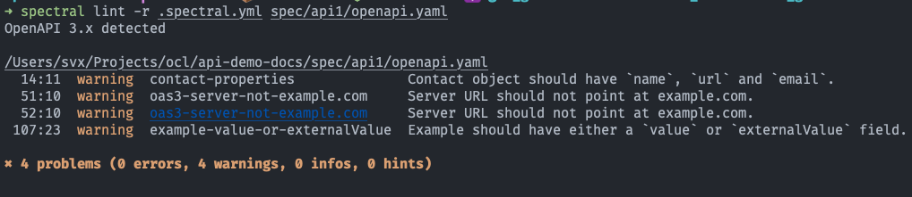

# Spectral
Key Point
💡 OAS validation with Spectral

# About
Spectral, an Open Source JSON/YAML Linter
is used for linting and validation of the OpenAPI (openapi.yml) spec.
# Install
Please refer to the official docs.
# Configuration
We use a combination of custom and the default Spectral OAS rules.
extends: [[spectral:oas, all]]
rules:
# Default spectral OAS rules
# https://stoplight.io/p/docs/gh/stoplightio/spectral/docs/reference/openapi-rules.md
oas3-unused-components-schema: false
operation-default-response: false
# Custom rules
tag-descriptions:
description: Tags must have a description.
given: $.tags[*]
severity: error
recommended: true
then:
field: description
function: truthy
operation-summary-formatted:
description: Operation `summary` should start with upper case and end with a dot.
recommended: false
type: style
given: "$.paths.*[?( @property === 'get' || @property === 'put' || @property ===
'post' || @property === 'delete' || @property === 'options' || @property ===
'head' || @property === 'patch' || @property === 'trace' )]"
then:
field: summary
function: pattern
functionOptions:
match: "^[A-Z].*\\.$"
tags:
- operation
# Breakdown
We include the default Spectral OAS rules, but we disable oas3-unused-components-schema and operation-default-response.
rules:
# Default spectral OAS rules
# https://stoplight.io/p/docs/gh/stoplightio/spectral/docs/reference/openapi-rules.md
oas3-unused-components-schema: false
operation-default-response: false
In the following we use two custom rules
tag-descriptions:
description: Tags must have a description.
given: $.tags[*]
severity: error
recommended: true
then:
field: description
function: truthy
This rule is checking for description of tags. If tags have no or empty descriptions the check will fail!
operation-summary-formatted:
description: Operation `summary` should start with upper case and end with a dot.
recommended: false
type: style
given: "$.paths.*[?( @property === 'get' || @property === 'put' || @property ===
'post' || @property === 'delete' || @property === 'options' || @property ===
'head' || @property === 'patch' || @property === 'trace' )]"
then:
field: summary
function: pattern
functionOptions:
match: "^[A-Z].*\\.$"
tags:
- operation
This rule is inspecting summaries.
Summaries should start with upper case and should have always a dot (.) at the end.
Lefthook →